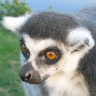
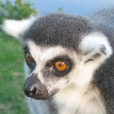
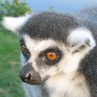

여우원숭이는 '원숭이 이전 단계'라는 의미의 '원원류(原猿類, Prosimians)'라고도 알려진 작은 영장류입니다. 여우원숭이는 아프리카 동부 해안에 위치한 마다가스카르 섬과 근방의 코모로 제도에서만 서식합니다. 여우원숭이의 크기는 매우 작으며, 큰 경우에는 무게가 7~9kg까지 나갑니다. 여우원숭이의 평균 수명은 18년으로, 영장류 중에서 가장 짧습니다.
여우원숭이는 어떤 생김새를 가지고 있나요?
여우원숭이는 무엇을 먹고 사나요?
여우원숭이는 어떻게 대화하나요?
세상에는 몇 종류의 여우원숭이가 있나요?
초기의 여우원숭이는 아프리카에 살았나요?
초기의 여우원숭이에게 무슨 일이 있었나요?
여우원숭이는 영장류에 속하며, 유인원 및 인간과 관련된 종입니다. 대부분의 여우원숭이는 긴 돌출된 주둥이를 갖고 있으며, 이를 통해 뛰어난 후각 기능을 발휘할 수 있습니다. 여우원숭이의 털은 붉은 빛이 도는 갈색, 회색 등의 다양한 색을 띱니다. 여우원숭이의 크기는 다양한데, 가장 작은 피그미쥐원숭이의 경우에는 28g 정도이고 여우원숭이 중에서 가장 큰 부류인 인드리여우원숭이는 최대 9kg까지 무게가 나갑니다. 여우원숭이는 후각이 뛰어나며 시각도 잘 발달되어 있는데, 야간에도 시력이 매우 좋습니다.

대부분의 여우원숭이는 과일, 나뭇잎, 그리고 열대림에 있는 다양한 식물을 주식으로 합니다. 어떤 여우원숭이는 과즙을 선호하고, 오직 대나무만 먹는 여우원숭이도 있습니다. 아이아이여우원숭이는 갈고리 발톱처럼 생긴 가운데 손가락을 사용하여 나무 껍질 사이에서 통통한 벌레를 파내어 잡아먹습니다. 회색여우원숭이는 나무 꼭대기에서 죽순을 먹는 것을 좋아합니다. 알락꼬리여우원숭이(호랑이꼬리여우원숭이라고도 부름)는 꽃 뿐만 아니라, 허브와 작은 동물도 즐겨 먹습니다. 동물원에 사는 여우원숭이는 채식주의자용 과자와 같은 별식을 먹기도 합니다.

여우원숭이는 후각을 통해 대화합니다. 여우원숭이는 엉덩이와 발에 냄새 분비샘이 있어서 접촉하는 모든 표면에 냄새를 남깁니다. 이렇게 남겨진 냄새를 맡아서 다른 여우원숭이가 지나간 자리임을 알 수 있습니다. 또한, 여우원숭이는 크고 풍성한 꼬리를 공중에서 흔들어서 서로 대화합니다. 여우원숭이의 꼬리는 한 나무에서 다른 나무로 뛰어넘을 때 균형을 잡을 수 있도록 도와줍니다.
여우원숭이는 5과로 분류되며, 과학자들은 대체적으로 현재 약 88종의 여우원숭이가 생존하는 것으로 보고 있습니다. 이중에서 몇몇 여우원숭이에 대한 흥미로운 정보를 정리해 보았습니다:
| 여우원숭이 | 흥미로운 정보 |
|---|---|
| 쥐/난쟁이여우원숭이 | 가장 작은 영장류로서, 야행성이며 나무 위에서 삽니다. |
| 알락꼬리여우원숭이 | 가장 널리 알려진 여우원숭이로, 검은색과 흰색이 섞인 특이한 꼬리를 갖습니다. 사회성이 매우 발달되었으며, 최대 30마리의 여우원숭이가 암컷을 우위로 하는 무리를 지어 삽니다. |
| 족제비여우원숭이 | 야행성이며 나무 위에서 삽니다. 땅 위에 있을 때에는 캥거루처럼 깡충깡충 뛰어다닙니다. |
| 인드리여우원숭이 | 가장 큰 여우원숭이 중 하나입니다. 낮에 활동합니다. 강한 다리를 가졌으며, 나무 꼭대기에서 9m가 넘는 거리를 뛰어다닐 수 있습니다. |
| 아이아이여우원숭이 | 가장 큰 야행성 영장류입니다. 대부분의 경우 무리를 짓지 않고 홀로 살아갑니다. 생김새가 설치류(쥐, 다람쥐 등)와 비슷합니다. |
과학자들은 원래 여우원숭이 종이 아프리카 대륙에서 발생했고, 이후에 여우원숭이의 서식지가 아프리카 대륙에서 떨어져나가 지금의 마다가스카르라고 알려진 섬이 되었다고 생각했습니다. 그러나, 최근 연구에 의해 여우원숭이가 진화하기 전에 이미 마다가스카르가 아프리카 대륙에서 분리되었던 것으로 밝혀졌습니다. 그 결과, 오늘날의 과학자들은 바닷물에 떠다니는 초목을 통해서 여우원숭이가 섬으로 이동한 다음에 다른 영장류와는 격리된 상태에서 살아가면서 진화해 온 것으로 추정하고 있습니다.
마다가스카르에서 고립된 채로 살아가면서, 여우원숭이는 놀라운 종으로 진화해왔습니다. 화석 연구에 따르면 일부 여우원숭이 종은 오늘날에 비해 상당히 큰 종으로 진화했던 것으로 보입니다. 지금은 멸종되었지만, 한 종은 무게가 160~200kg 사이에 이른 것으로 추정되는데, 이는 어른 숫컷 고릴라와 맞먹는 무게입니다.
메모: 다음은 연습용 필드입니다; 의견과 관련된 정보는 수집되지 않습니다.